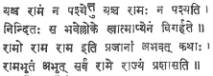

BALASUBRAHMANYA
AIYAR: A GREAT SOUL
DR.
P. NAGARAJA RAO
The
demise of Sri K. Balasubrahmanya Aiyar on September 30 removes from the field
of Indian Culture and Hindu religion a great soul. He lived the full life of a
full-blooded Hindu with an indomitable faith in the Lord, the sanctity of the
Vedas, the greatness of the Sanskrit language, in the power and glory of the
saints and Acharyas of the Hindu faith. He lived a life of acharya. From
the time of his brahmopadesa till he breathed his last, he never gave up
his sandhyavandana except for the days he lay unconscious when ill in
the last days. He is a firm believer in the Hindu ritual and temple worship,
but he insisted they should not be empty but must be expressive and symbolic of
our faith. His Gurubhakti was only equalled by his love for his father.
In 1927 he met the Kanchi Acharya and invited him to Madras to take his lodging
in the Sanskrit College. Since then he has remained a devout disciple of the
Math and earned the deserved title Dharmarakshamani. He edited for over
a decade the popular religious journal Kamakoti Pradipa. In it, apart
from his editorial writings, he has given us a series of articles on two of the
important Hindu Samskaras, the Upanayana, and the marriage. The
articles are of great interest and have moved the minds of men and women and
raised the drooping faith of many a Hindu in his religion. The articles deserve
to be brought out as separate books. He was a highly informed man. His mind was
a storehouse of Sanskrit learning in all its branches:...Sahitya, Sastra
particularly Advaita Vedanta, Dharma Sastras, Sangita, etc.
His
intellectual output was very much less that what it could have been in view of
the great knowledge he possessed. He made excellent use of the association he
had with eminent Pandits and learnt the Sastras from them in the traditional
way. He seated himself before a large table, books piled up, papers filed and
with chairs all round him. Visitors used to pour in, each with a problem of his
own for he was connected with several public institutions. He would receive all
and speak to them his mind and they would leave the room better and satisfied,
He would not easily suffer any lapse or indolence in people that sought his
help. He was critical and harsh on occasions, but had the larger interests in
view. The apparent sternness of his manner concealed a child-like heart and his
feelings for his friends, young or old were tender and sincere. His laughter
was his relaxation. He knew men and their merits with an uncanny insight and he
would size them up in a moment. He rarely made a mistake in judgment of men. He
had two loves among our classics, the Ramayana of Valmiki and the poems
and dramas of Kalidasa. He used to go into raptures over the verses of the Ramayana.
His favourite verses are

He
loved Kalidasa and held him up in his lectures for the balanced view of life
the great poet put forth in his works. He was engaged in the last two years to
bring out a book on Kalidasa’s genius. He delivered a few lectures on the
theme. He has given us the neat little books published by the Bharatiya Vidya
Bhavan, Hindu Ideals and Yakshaprasnas, Krishnaswami Rao and
Venkataratnam Naidu endowment lectures delivered under the auspices of the
Madras University. In these books we get a challenging account of Hindu social
philosophy and ethics meeting the charges of unsympathetic critics, who crudely
and cruelly interpreted Hindu doctrines. As a lawyer he delivered Justice
Kumaraswami Sastri Law Lectures on Hindu Law.
He
was born to a distinguished Indian, the late Sri V. Krishnaswami Aiyar, in 1892
and had his early education in the Hindu High School, Triplicane, under the
great Headmaster, the late Rt. Hon’ble V. S. Srinivasa Sastriar, who taught him
not only English but also Sanskrit. He graduated from the Madras University
from the Presidency College with Chemistry as his subject. He obtained the
University Gold Medal and took to the study of Law. He was an apprentice
under the late S. Srinivasa Ayyengar, who was then the Advocate-General of
Madras and who was a great friend Sri Krishnaswami Aiyar. He worked with
distinction at the bar and was associated with late Sir Alladi Krishnaswami
Aiyar in many cases. He gave up active practice in 1945 and since then he was a
great publicist in different fields. He was for over 15 years a member of the
Madras Legislative Council and in that capacity he contributed his knowledge to
the debates on the Agrarian Problems with insight and fervour. He was a member
of the Senate of the Madras University from 1925 till 1970 and a member of
Syndicate from 1947 to 1970, for a period of 23 years and contributed
significantly to the solutions of many an educational problem. On several
occasions Dr. A. L. Mudaliar expressed his appreciation of Mr. Balasubrahmanya
Aiyar’s work on the Syndicate as his close associate.
The
spread of Sanskrit language was a great passion with him. He saw the seeds of
Indian culture in the language. He took an active part in running very
efficiently the Madras Sanskrit College founded by his father. It is not an
empty boast or an exaggeration to state that the Pandits who emerged from the
college or taught in it are all-India figures and great exemplars of Sanskrit
learning. They are models of finished scholarship and profundity. Towards the
very end of his life, his sole concern was to put the college on a sound basis
and towards this he arranged a benefit performance by our doyen musician Sangita
Kalanidhi Srimati M. S. Subbalakshmi.
He
loved Sanskrit and also Tamil. He could speak in Tamil eloquently and
humorously. In his own house for a long time there was a Yogi who had memorised
the entire Tevaram and Tiruvachakam (the song of the four Saivait saints) and
would sing with him the Tamil hymns. He was fond of Appar. He discoursed on the
teachings of the Gita for three years, week after week to a large audience in
Tamil. He would like to speak. To him to speak out and speak out a theme was an
imperative. He harmonised the claims of Tamil and Sanskrit and pleaded for their
peaceful co-existence.
On
the organisational side he had to his credit many activities. He was the
treasurer to the Indian National Congress in 1927, when it met in Madras. He
was the secretary of the Sanskrit College for decades and President of the Sanskrit
Academy, the Vice-president of the Bharatiya Vidya Bhavan, Madras Kendra. He
delivered the classical address at the Madras University Convocation to
students spelling out the true objective of university education.
I
conclude my tribute to Mr. Aiyar with a passage from Carlyle which helps me to
avoid all evaluation and comparisons. He writes, “In a world which exists by
the balance of antagonisms, the respective merits of the conservative and
innovator must ever remain debatable, great in the meanwhile and indubitable
for both the sides is the merit of him who in a day of change, walks wisely and
honestly.” Such a one was Mr. Balasubrahmanya Aiyar.